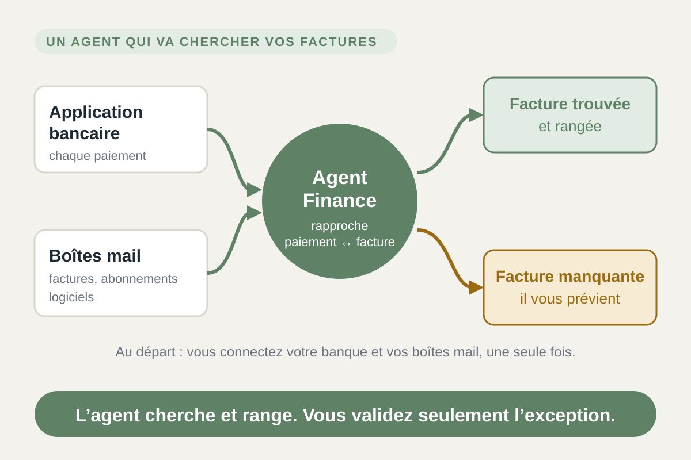

AI Business Headquarters
Un agent qui va chercher les factures tout seul, dans la banque et dans les e-mails.
Un problème que j’ai vécu, une solution que j’ai imaginée, construite avec l’IA. Démo sur données fictives, sans client.
Le rapprochement, chaque mois.
En startup, j’ai vu le même problème revenir à chaque clôture et dans chaque dossier de financement public.
Elles dorment dans les e-mails, ou personne ne les a téléchargées.
Chaque paiement est relié à sa facture, une par une.
Des heures de relances, au lieu de piloter l’activité.
Un agent qui fait le travail répétitif.
On connecte sa banque et ses boîtes mail une fois. Ensuite, l’agent cherche, rapproche et prévient.

Pour chaque paiement, il cherche la facture : dans les e-mails, abonnements compris, ou dans l’application bancaire.
Il relie chaque paiement à sa facture, même quand un paiement couvre plusieurs factures.
S’il manque une facture, il relance. Rien de sensible ne part sans accord humain.
Les outils au service de l’idée.
Je ne suis pas développeur. Je choisis l’outil qui répond au besoin, et je pilote l’IA qui code.
 Claude Code
Claude CodeJe décris le besoin et les règles. L’IA écrit le code, je relis et je teste.
 Python
Python FastAPI
FastAPILes règles de rapprochement entre paiements et factures.
Paiements, factures et décisions, stockés et retrouvables.
 n8n
n8nLes factures reçues par e-mail arrivent automatiquement jusqu’à l’agent.
Une interface simple qui montre ce qui a été fait et ce qui manque.
 Git
GitChaque étape est sauvegardée. On peut toujours revenir en arrière.
Ma règle : audit, plan, test, puis mon accord avant chaque étape. Les règles vérifient, l’humain valide l’exception.
En cours de développement.
Sur la démo, les actions demandées à l’utilisateur passent de 33 à 5.
Les factures du mois : récupération, rapprochement et rappels, sur une démo.
Vraies connexions à l’application bancaire, et une IA locale (Ollama) pour lire les factures scannées.
Poser des questions à l’agent : « pourquoi me manque-t-il 3 factures ? »
Tout tourne en local, sur une entreprise fictive. Aucune donnée réelle, aucune information d’UDC.
Une équipe d’agents.
À terme : finance, RH, juridique, stratégie, opérations. Connectés aux outils de l’entreprise (banque, paiements, e-mails), sans les remplacer.

Maquette de la vision. Pas encore développée : je construis d’abord le moteur.